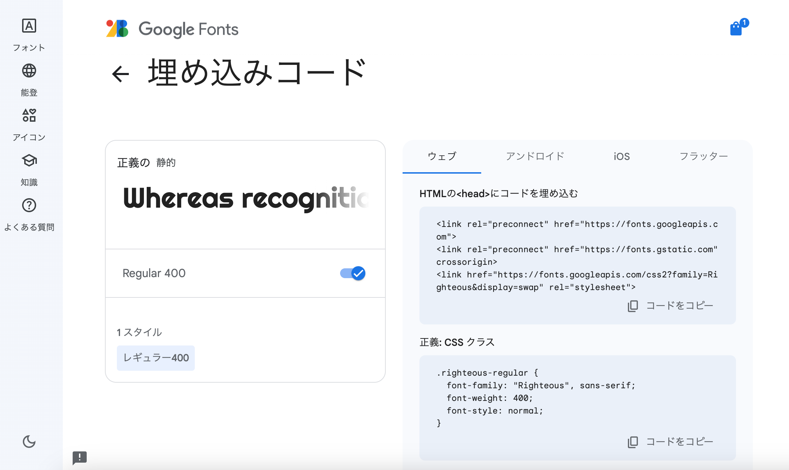

制作HPで主に使用するフォントを決定しました。
HPをデザインする上で、フォントなどの細かいところにこだわりを入れた作品にしたかったため、どのようなフォントを使用するか思案しました。
その結果、今回はGoogleフォントの「Righteous」というフォントを使用することにしました。
Google Fontsでhtmlとcssの埋め込みコードをコピーし制作HPに貼り付け、読み込みを行いました。

→制作HP